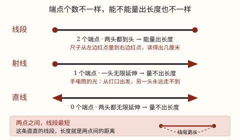

线段、射线和直线
线段有两个端点、能量出长度；射线只有一个端点，直线一个也没有，都无限延伸、量不出长度。两点之间线段最短。
| 所属主题 | 图形的认识与测量 |
|---|---|
| 所属模块 | 图形与几何 |
| 课标学段 | 第二学段（3~4年级） |
| 前置知识 | 认识厘米和米 |
| 核心素养 | 空间观念几何直观量感 |
课标要求
| 图形与几何·图形的认识与测量 | 结合实例认识线段、射线和直线；体会两点间所有连线中线段最短，知道两点间距离；会用直尺和圆规作一条线段等于已知线段（例26）；了解同一平面内两条直线的位置关系。 印刷第 29 页 行为动词：理解 |
|---|---|
| 图形与几何·图形的认识与测量 | 在图形认识与测量的过程中，增强空间观念和量感。 印刷第 30 页 行为动词：感悟 |
说明
线段：一根直直的线，两头各有一个端点，比如课本的一条边、拉紧的一段跳绳。因为两头都「到头」了，用尺子能量出它有多长。
射线：只有一个端点，另一头一直伸出去、没有尽头。手电筒射出的光、从一点射出去的激光笔光束，都像射线。它有一头没到头，所以量不出长度。
直线：一个端点也没有，两头都无限延伸。我们在纸上画的那一段只是它的一小截，两头添上箭头表示「还在往前走」，箭头不是端点。直线同样量不出长度。
记住最有用的一句：两点之间，线段最短。在 A、B 两点之间可以连出许多条线，直着连的那条线段最短，它的长度就叫作两点间的距离。
使用场景
跑道与路线：运动会上从起点到终点，沿着直的跑道最省路；绕花坛走就要多跑一截。
折纸和裁剪：折出的折痕、裁下的一条纸边都是线段，两头都到头，能量出几厘米。
光线和探照灯：夜里手电筒、路灯射出的光束，从灯口那一点出发越走越远，像射线。
画图和连线：在地图上把两个地铁站连起来、作业本上连接两个点，连出来的都是线段。
校园里找线：黑板边、桌沿、斑马线是线段；望向远处的铁轨，帮我们想「两头都伸出去」的直线。
注意点
端点个数决定能不能量长度。只有线段两头都到头，能量；射线、直线有一头或两头没到头，都量不出——不是尺子不够长，是它们本来就没有全长。
画在纸上的都只是「一截」。射线、直线是无限长的，纸上那段加个箭头只表示「还往这边走」，千万别把箭头当成端点。
只有线段能比长短。射线和直线只能说方向，说「这条直线比那条长」是没有意义的。
「两点之间线段最短」说的是线段，不是直线。直线没有端点，谈不上「两点之间」；这两句话别串在一起背。
线段要直。弯曲的线、折了两下的线都不是线段，能量长度但不参与「哪条最短」的比较。
为什么是这样

图 1：端点个数 2、1、0，决定了能不能量出长度；底部的曲线比直连线长
算理推导
先数端点（看图 1）：线段两头各有一个端点，是 2 个；射线只有一个端点，是 1 个；直线一个端点都没有，是 0 个。三种线的差别，全部落在这个数上。
量长度要拿尺子从一头量到另一头，两头都得有位置。线段两头都有端点，尺子的 0 刻度对准一头、另一头读个数就行；射线和直线总有一头指不到，尺子没处放，所以量不出长度。端点个数不是贴标签，它直接决定「能不能量」。
再看课标那句话：在纸上点 A、B 两点，中间能连出很多条线——直着连的、绕个弯的、折两下的。把每根细线拉直贴到尺子上比一比，绕弯的都要多走一段路，直的那条最短。所以两点之间线段最短，这条最短线段的长度就叫两点间的距离。
这也说清了为什么射线、直线不能叫「距离」：距离得有两个点、两头都定住；射线直线有一头是敞开的，定不住，自然谈不上两点间的距离。
最后把三行摆在一起看：端点 2 → 能量、能比长短；端点 1 或 0 → 只能说方向。线段、射线、直线不是三个要背的名字，是同一个「直直的线」在端点上的三种情况。
动手实验
在纸上点两个点 A、B，剪几根细线：一根绷直了刚好连住 A、B，另外几根先绕个弯或折一下再连过去。把每根线都取下来拉直、贴到尺子上量——绷直那根最短，绕弯的都更长，这就是「两点之间线段最短」。接着把 A 点当灯口，用笔只往一个方向画出去并画上箭头，你会发现怎么也量不到「头」，这就是射线；再把线的两头都画上箭头，两头都走不到头，就是直线。最后拿尺子老老实实量一下课本的一条边：两头都按得住，才读得出 26 厘米。能量出长度的，只有两头都有端点的那一种。
按场景的例题
例 1（场景：行程出行） 校运会跑步路线
校运会上从起点 A 到终点 B，可以沿直跑道跑，也可以绕过花坛跑。哪条路最短？这个最短的长度叫什么？
解：两点之间线段最短，直着连 A、B 的那条线段最短；它的长度就是 A、B 两点间的距离。
答：直跑道最短，这个长度叫两点间的距离。
例 2（场景：校园生活） 折纸压出折痕
折纸时把一张纸对折压出一条折痕，量得 18 厘米。这条折痕是线段、射线还是直线？为什么？
解：折痕两头都到头、能量出 18 厘米，说明有 2 个端点，是线段；射线和直线都量不出长度。
答：是线段，长 18 厘米。
例 3（场景：计量与估算） 用尺子量长度
用尺子量数学书的一条边量得 26 厘米；再量手电筒射出去的那道光柱，能量出长度吗？说说理由。
解：书边两头都有端点，是线段，能量；光柱只有一个端点（灯口）、另一头无限延伸，像射线，量不出长度。
答：书边能量出 26 厘米；光柱量不出长度。
例 4（场景：自然现象） 夜里的光束与画在图上的直线
夜里手电筒射向天空的光，和作业本上两头都画箭头的那条线，各像哪种线？它们能比长短吗？
解：光从灯口出发、一头无限延伸，像射线（1 个端点）；两头都画箭头的线是直线（0 个端点）。两者都无限延伸，不能比长短。
答：分别像射线和直线，都不能比长短。
常用推论
线段能量出长度，量出的数按 1 m = 10 dm = 100 cm = 1000 mm 换算：几米几厘米先化成同一单位再比大小。
封闭图形一周的长度，就是几条线段接起来的总和：长方形周长 C = 2(a + b)、正方形周长 C = 4a。
反过来由周长求边长：a = C ÷ 2 - b（长方形）、a = C ÷ 4（正方形）——求出来的仍是线段的长度。
两点之间线段最短，所以这条线段的长度就是两点间的距离；绕弯的路线一定比它长。
易错点
错说「直线比射线长，射线比线段长」。
为什么错射线和直线都无限延伸，根本没有全长，谈不上谁长谁短；能比长短的只有两头都到头的线段。
正确线段能量长度、能比长短；射线和直线只谈方向，不谈长短。
错把纸上画的那段带箭头的线，当成「射线只有这么长」，还拿尺子量出 8 厘米。
为什么错纸太短，画不下无限长；箭头只是说「还往这边走」，不是端点。量到的 8 厘米是画在纸上的那一截，不是射线。
正确射线有 1 个端点、另一头无限延伸；纸上这段只是它的一小截，量不出全长。
错背成「两点之间直线最短」。
为什么错直线没有端点、两头都无限延伸，谈不上「两点之间」。课标原话说的是两点之间的线段最短。
正确两点之间线段最短，这段线段的长度叫两点间的距离。
直观理解
把三种线想成三种绳子：线段是两头都打了个结的跳绳，拎起来量一量就知道多长；射线是「一头拴在灯上、另一头放出去收不回来」的风筝线，你永远量不到它到底有多长；直线是两头都在放、谁也没拴住的绳，连一头都抓不住。要量长度，得两头都能抓在手里——所以只有线段量得出。而两个绳结之间，把绳子绷直最省绳，绕个圈就得多用一截，这就是「两点之间线段最短」。下次看到箭头，先想想它是「还在走」而不是「到这儿为止」。
线段两点能丈量，射线一头放出去；直线两头都不收，两点之间线段短。